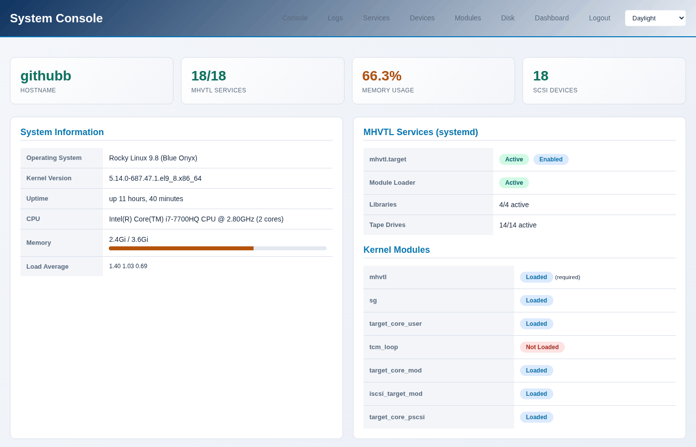
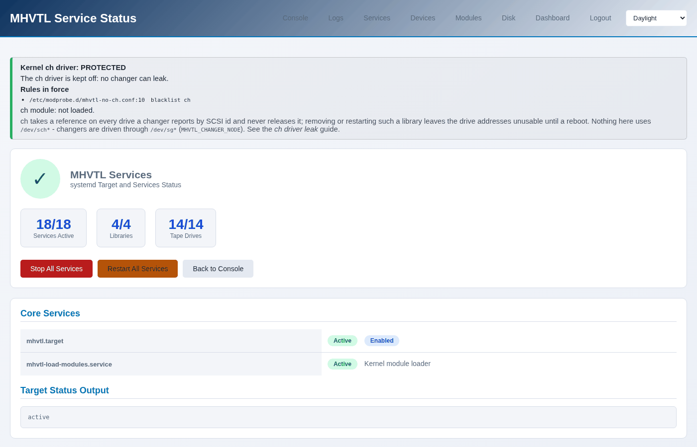
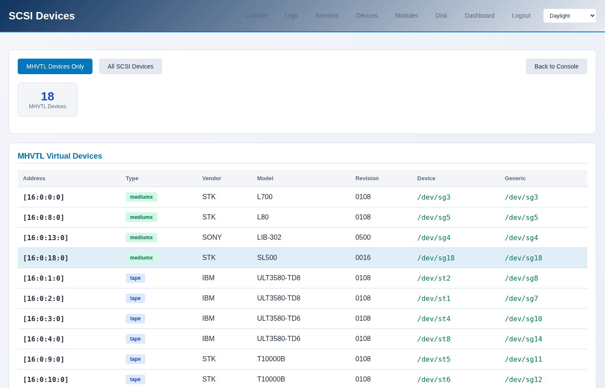
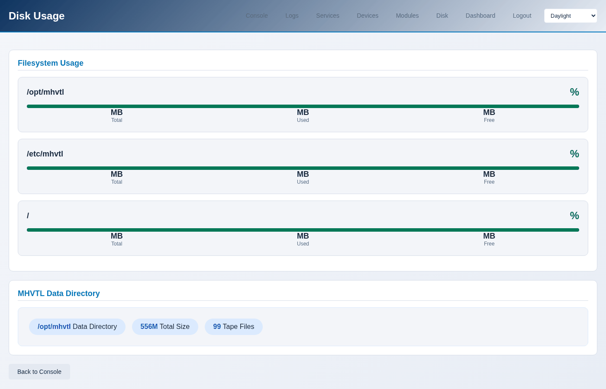

The system console
Six pages about the host rather than about the libraries: what is running, what the kernel sees, what is in the logs, and whether the disk is filling up. This is where to look when a library misbehaves and the library pages look fine.
{kind=link}

Console
/libraries/console/ - the summary: the host, the MHVTL services, the
kernel modules, and how many SCSI devices there are.
$ sudo mhvtl console system
hostname githubb
kernel 5.14.0-687.47.1.el9_8.x86_64
distribution Rocky Linux 9.8 (Blue Onyx)
cpu model Intel(R) Core(TM) i7-7700HQ CPU @ 2.80GHz
cpu count 2
uptime up 12 hours, 22 minutes
load average 0.36 0.23 0.26
memory total 3.6Gi
memory used 2.0Gi
memory percent 56.1
Services
Every MHVTL unit: the target, one daemon per library, one per drive.
$ sudo mhvtl status system
reading /etc/mhvtl/
mhvtl.target running
enabled yes
backend mhvtl
libraries 4/4 running
drives 13/14 running
healthy no
healthy no with a count short of the total means a daemon is down. The
page names which, and so does systemctl:
{kind=link}

$ systemctl --failed 'vtl*'
$ sudo systemctl start vtltape@52.service
Devices
What the kernel sees, which is the ground truth underneath everything MHVTL claims.
$ sudo mhvtl scsi devices
ADDRESS TYPE VENDOR MODEL DEVICE GENERIC
----------- ------- ------ ----------- --------- ---------
[16:0:0:0] mediumx STK L700 /dev/sg3 /dev/sg3
[16:0:1:0] tape IBM ULT3580-TD8 /dev/st2 /dev/sg8
[16:0:2:0] tape IBM ULT3580-TD8 /dev/st1 /dev/sg7
mediumx is a robot, tape a drive. A changer has no /dev/st, so
its generic node is the one everything uses.
{kind=link}

To go the other way - from a library or drive id to its device:
$ sudo mhvtl scsi map
KIND ID DEVICE
------- -- ---------
library 10 /dev/sg3
library 20 /dev/sg4
library 30 /dev/sg5
library 50 /dev/sg18
drive 11 /dev/st2
drive 12 /dev/st1
These numbers are not stable. They change when the MHVTL module reloads and when a library is recreated, which is why anything that remembers a device - an iSCSI export, for instance - has to be repointed afterwards. See Exporting a library over iSCSI.
Modules
$ sudo mhvtl console modules
backend: mhvtl
MODULE LOADED REQUIRED
----------------- ------ --------
mhvtl yes yes
sg yes no
target_core_user yes no
tcm_loop no no
target_core_mod yes no
iscsi_target_mod yes no
target_core_pscsi yes no
Only mhvtl is required. The rest matter when exporting over iSCSI: LIO
loads what it needs, and a module that is missing shows up there as an export
that cannot be made.
The ch module is deliberately not in this list, and is blacklisted on
this host. It takes a reference on every drive a changer reports and never
gives it back, which makes those drives’ SCSI addresses unusable until the
machine reboots. The guide The kernel ch driver leak explains it.
Logs
An allowlisted set of logs, tailed - the console never reads an arbitrary path off the disk.
$ sudo mhvtl console logs -n 20
Sep 21 13:05:37 githubb /usr/bin/vtllibrary[853]: spc_inquiry(): INQUIRY ** (80717)
Sep 21 13:05:37 githubb /usr/bin/vtllibrary[853]: CDB (80718) (delay 1205): 1a 08 1d 00 88 00
Sep 21 13:05:37 githubb /usr/bin/vtllibrary[853]: spc_mode_sense(): MODE SENSE 6 (80718) **
MHVTL logs every SCSI command it is given, so this is verbose and useful in equal measure: when a backup fails, the last few lines say what the drive was asked to do and what it answered.
Disk
Tapes are files. When the disk fills, writes fail in ways that look like drive faults.
$ sudo mhvtl console disk
PATH SIZE USED FREE USED %
---------- ---- ---- ---- ------
/opt/mhvtl 62G 38G 25G 62
/etc/mhvtl 62G 38G 25G 62
/ 62G 38G 25G 62
/opt/mhvtl holds the cartridges, /etc/mhvtl the configuration. A
cartridge only occupies what has been written to it, not the size it was
created with - so a library of ten 500 GB tapes does not need five terabytes
until somebody writes that much.
{kind=link}
